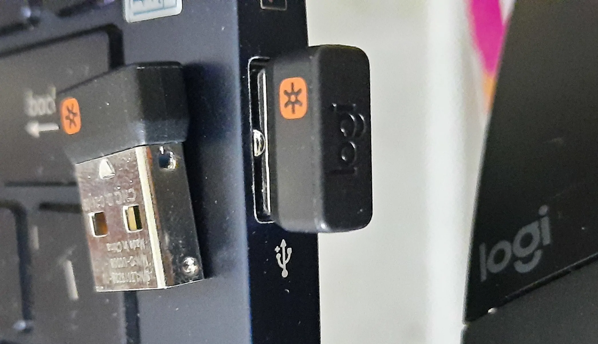

Ngày nay, những bộ chuột phím không dây dần trở nên phổ biến, với 2 loại kết nối: bluetooth và wireless.
Chuột, phím bluetooth/không dây(wireless)
- kết nối bluetooth sử dụng... bluetooth.
- kết nối wireless sử dụng 1 thiết bị nhỏ cắm vào cổng USB, gọi là wireless USB receiver (đầu thu không dây).

Khi bán các thiết bị chuột, bàn phím, cục USB receiver này thường đi kèm sẵn, khiến ta có thể lầm tưởng nó chỉ hoạt động được với thiết bị đi kèm, và mất cục nhỏ xíu đó là... tèo.
Thử tưởng tượng nhà sản xuất Logitech mỗi ngày sản xuất hàng ngàn con chuột máy tính ở 1 nhà máy, hàng ngàn USB receiver tại 1 nhà máy khác xa hàng ngàn cây số, làm sao để đảm bảo chúng khớp 1-1?
Bởi vì chúng không cần! đảm bảo điều nói trên giống như ốc và vít phải sản xuất từng cặp vậy.
USB receiver có thể cấu hình lại và "pair" với các thiết bị khác nhau.
Cấu hình USB receiver
Một USB receiver hiện đại (2020), của Logitech sử dụng công nghệ "Unifying" có thể pair 1 lúc 6 thiết bị khác nhau.
Dấu * trên receiver trong hình là logo của công nghệ Logitech Unifying.
python3 -c 'print("{} is the answer to life".format(ord("*")))'
42 is the answer to life
- Các receiver tương tự, nếu có logo chữ G là thuộc công nghệ Lightspeed, dành cho dòng chơi game, thường có cả tên model luôn do chỉ hoạt động với model tương ứng.
- Các receiver không có logo gọi là "nano receiver", thấy ở các sản phẩm giá thấp Logitech MK240,
- các receiver to bằng 2 đốt ngón tay (như USB driver) gọi là micro receiver.
Trên Windows/MacOS có thể tải app Options của Logitech để cấu hình/pair các thiết bị.
Trên Linux, dùng Solaar có sẵn trong repo Ubuntu từ 16.04.
Solaar is a Linux manager for many Logitech keyboards, mice, and trackpads that connect wirelessly to a USB Unifying, Lightspeed, or Nano receiver, connect directly via a USB cable, or connect via Bluetooth. Solaar does not work with peripherals from other companies.
Sau khi pair xong, USB receiver và chuột/phím sẽ "nhớ" nhau, có thể dùng thoải mái ở các máy tính khác, khi cần thì pair lại, linh hoạt như các thiết bị bluetooth.